Autolite Dual Advance Distributors · 22-02-05
To perform the operations in this section, it will be necessary to remove the distributor from the engine and place it in a vise.
Bench Disassembly
Six Cylinder Engine
The distributor assembly is shown in Fig. 7.
-
Remove the rotor.
-
Disconnect the primary and the condenser wires from the breaker point assembly.
-
Remove the breaker point assembly and condenser retaining screws. Lift the breaker point assembly and condenser out of the distributor.
-
Remove the spring clip that secures the diaphragm link to the movable breaker plate.
-
Remove the diaphragm retaining screws and slide the diaphragm out of the distributor.
-
Working from the inside of the distributor, pull the primary wire through the opening in the distributor
-
Remove the spring clip, the flat washer, and the spring washer securing the breaker plate to the sub-plate.
-
Remove the sub-plate retaining screws and lift both plates out of the distributor.
-
Mark one of the distributor weight springs and its brackets. Also mark one of the weights and its pivot pin.
-
Carefully unhook and remove the weight springs.
-
Lift the lubricating wick from the cam assembly. Remove the cam assembly retainer and lift the cam assembly off the distributor shaft. Remove the thrust washer.
-
Remove the weight retainers and lift the weights out of the distributor.
-
Remove the distributor cap clamps.
-
If the gear and shaft are to be used again, mark the gear and the shaft so that the pin holes can be easily aligned for assembly. Remove the gear roll pin (Fig. 8).
-
Invert the distributor and place it on a support plate in a position that will allow the distributor shaft to clear the support plate and press the shaft out of the gear and the distributor housing (Fig. 9).
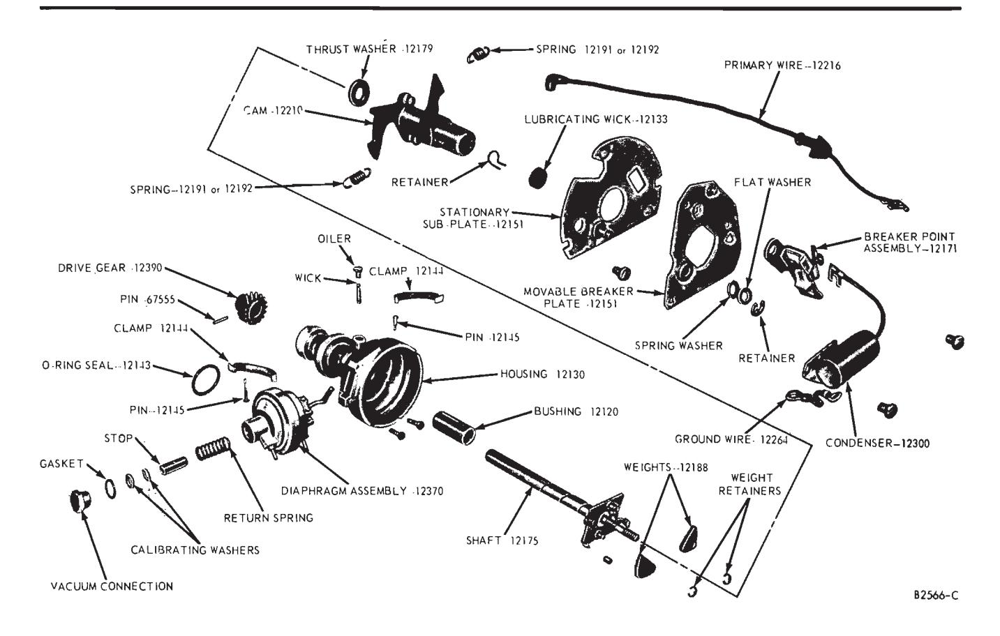
Fig. 7 — Distributor Assembly 6-Cylinder Engine -
Refer to Fig. 10 and remove the distributor shaft bushing.
-
Remove the oil filler cap and wick.
Eight Cylinder Engine
The distributor assembly is shown in Fig. 11.
-
Follow steps 1-13 under Six Cylinder Engine.
-
If the gear and shaft are to be used again, mark the gear and the shaft so that the pin holes can be easily aligned for assembly. Remove the gear roll pin (Fig. 8), and then remove the gear (Fig. 12).
-
Remove the shaft collar roll pin (Fig. 13).
-
Invert the distributor and place it on a support plate in a position that will allow the distributor shaft to clear the support plate and press the shaft out of the collar and the distributor housing (Fig. 14).
-
Refer to Figs. 15 and 16 and remove the distributor shaft upper and lower bushings.
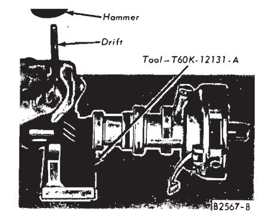
Fig. 8 — Removing or Installing Typical Gear Pin
Bench Assembly
Original Shaft and Gear
Six Cylinder Engine
-
Oil the new bushing and position it on the bushing replacer tool. Install the bushing (Fig. 17). When the tool bottoms against the distributor base, the bushing will be installed to the correct depth.
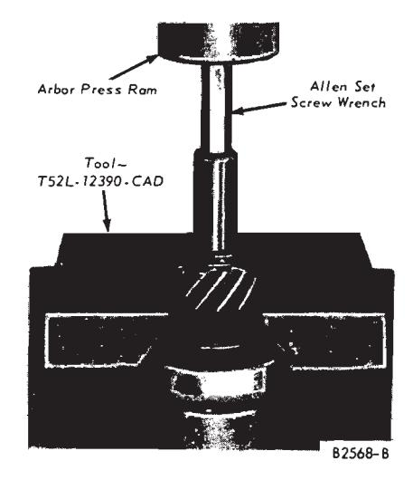
Fig. 9 — Removing Shaft and Gear 6-Cylinder Engine -
Burnish the bushing to the proper size (Fig. 18).
-
Clean out the bushing; then oil the shaft and slide it into the distributor body.
-
Attach the distributor shaft supporting tool to the distributor. Tighten the backing screw in the tool enough to remove all shaft end play.
-
Install the assembly in a press. Press the gear on the shaft (Fig. 19).
-
Check the shaft end play with a feeler gauge placed between the collar and the base of the distributor.
If the end play is not within specifications, replace the shaft and gear.
-
Remove the distributor from the press. Install the gear retaining pin (Fig. 8).
-
Position the distributor in a vise. Fill the grooves in the weight pivot pins with a distributor cam lubricant
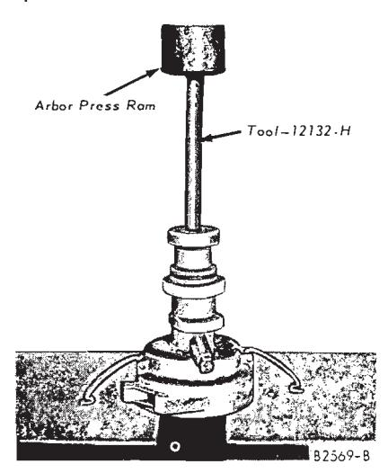
Fig. 10 — Removing Bushing — 6-Cylinder Engine(C4AZ-19D530-A).
-
Position the weights in the distributor (the marked weight is placed on the marked pivot pin) and install the weight retainers.
-
Place the thrust washer on the shaft.
-
Fill the grooves in the upper portion of the distributor shaft with distributor cam lubricant (C4AZ-19D530-A).
-
Install the cam assembly. Be sure that the marked spring bracket on the cam assembly is near the marked spring bracket on the stop plate.
If a new cam assembly is being installed, make sure that the cam is installed with the hypalon covered stop in the correct cam plate control slot. This can be done by measuring the length of the slot used on the old cam and by using the corresponding slot on the new cam. Some of the cams will have the size of the slot in degrees stamped near the slot. If the wrong slot is used, an incorrect maximum advance will be obtained.
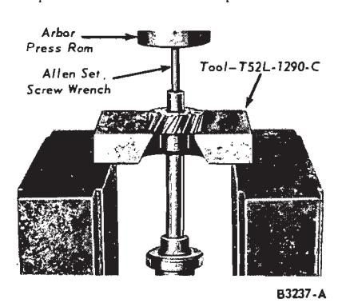
Fig. 12 — Removing Gear V-8 EnginePlace a light film of distributor cam lubricant on the distributor cam lobes. Install the retainer and the wick. Oil the wick with SAE 10W engine oil.
-
Install the weight springs. Be sure that the marked spring is attached to the marked spring brackets.
-
Place the breaker plate in position on the sub-plate.
-
Install the spring washer, the flat washer, and the spring clip that secures the breaker plate to the subplate.
-
Install the sub-plate hold down screws (the ground wire should be under the sub-plate hold down screw near the primary wire opening in the distributor).
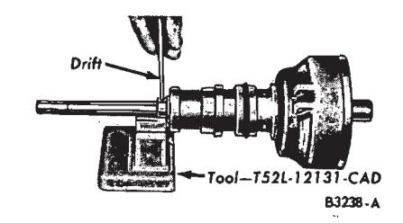
Fig. 13 — Removing or Installing Collar Pin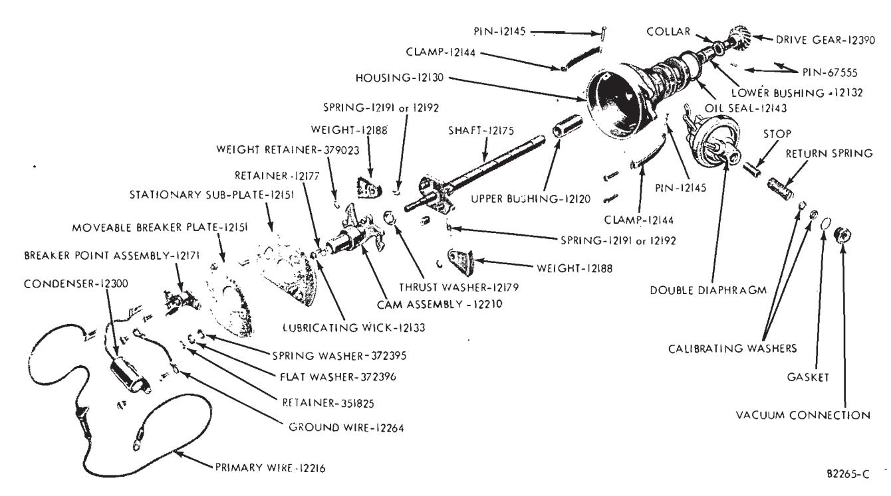
Fig. 11 — Distributor Assembly V-8 Engine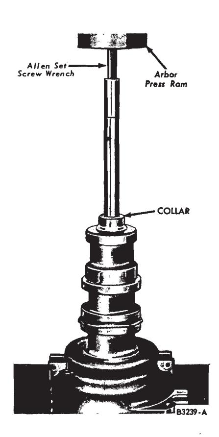
Fig. 14 — Removing Shaft — V-8 Engine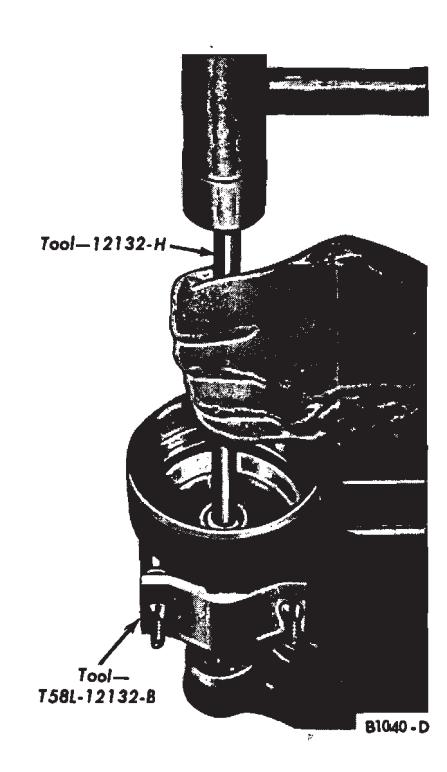
Fig. 15 — Removing Lower Bushing V-8 Engine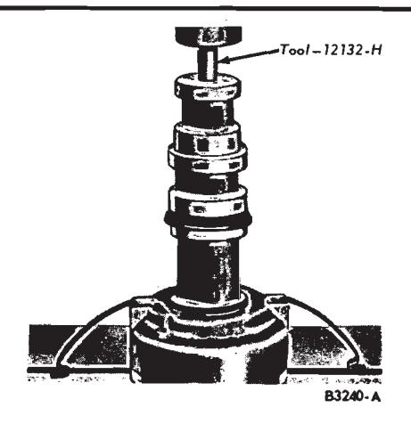
Fig. 16 — Removing Upper Bushing — V-8 Engine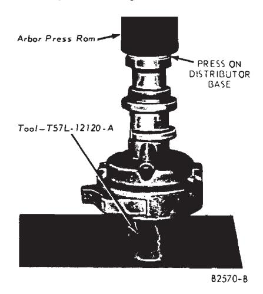
Fig. 17 — Installing Bushing — 6-Cylinder Engine -
Working from the inside of the distributor, push the primary wire through the opening in the distributor.
-
Slide the diaphragm into the opening in the distributor and place the link in its position.
-
Install the spring clip that secures the diaphragm link to the movable breaker plate and install the retaining screws.
-
Place the breaker point assembly and the condenser in position and install the retaining screws. Be sure to place the ground wire under the breaker point assembly screw farthest from the breaker point contacts on an eight cylinder engine distributor or under the condenser retaining screw on a six cylinder engine distributor. Align and adjust the breaker point assembly by following the procedure in Part 22-01.
-
Connect the primary and condenser leads to the breaker point assembly.
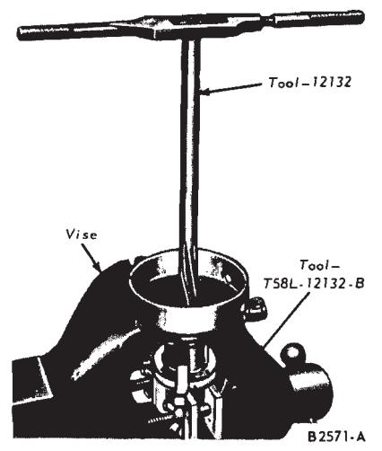
Fig. 18 — Burnishing Bushing — Typical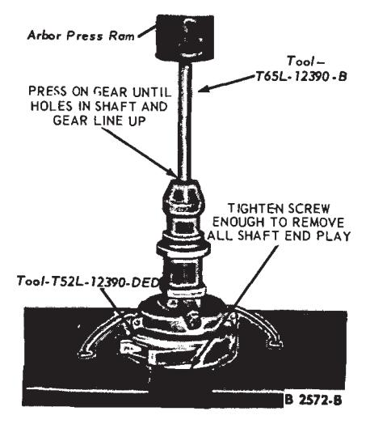
Fig. 19 — Original Shaft and Gear Installation — 6-Cylinder Engine -
Install the rotor and the distributor cap.
-
Check and adjust (if necessary) the centrifugal and vacuum advance (Refer to Part 22-01, Section 1).
Eight Cylinder Engine
-
Oil the new upper bushing, and position it on the bushing replacer tool. Install the bushing (Fig. 20). When the tool bottoms against the distributor base, the bushing will be installed to the correct depth.
-
Burnish the bushing to the proper size (Fig. 17).
-
Invert the distributor and install and burnish the lower bushing in a similar manner.
-
Oil the shaft and slide it into the distributor body.
-
Place the collar in position on the shaft and align the holes in the collar and the shaft, then install a new pin. Install the distributor cap clamps.
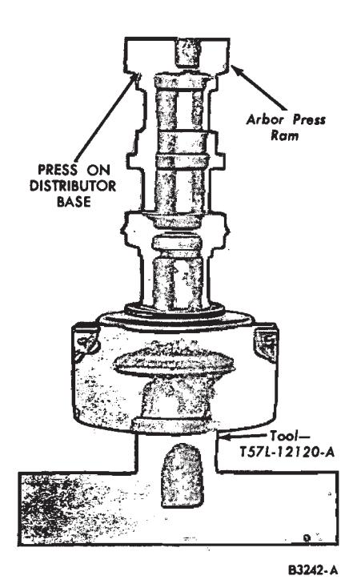
Fig. 20 — Installing Upper Bushing — V-8 Engine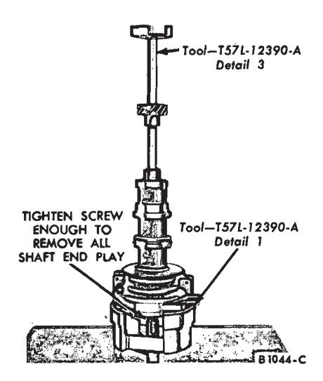
Fig. 21 — Installing Original Shaft and Gear — V-8 Engine -
Check the shaft end play with a feeler gauge placed between the collar and the base of the distributor. If the end play is not within specifications, replace the shaft and gear.
-
Attach the distributor shaft supporting tool to the distributor. Tighten the backing screw in the tool enough to remove all shaft end play.
-
Install the assembly in a press. press the gear on the shaft (Fig. 21), using the marks on the gear and shaft as guides to align the pin holes.
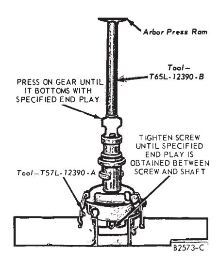
Fig. 22 — Installing New Shaft and Gear — 6-Cylinder Engine -
Follow steps 7-23 under Six Cylinder Engine.
New Shaft and Gear
Six Cylinder Engine
The shaft and gear are replaced as an assembly. One part should not be replaced without replacing the other. Refer to Fig. 7 for the correct location of parts.
- Follow steps 1, 2 and 3 under Installing Original Shaft and Gear—Six Cylinder Engine.
- Attach the distributor shaft supporting tool to the distributor and install the assembly in a vise. Insert a 0.003 inch feeler gauge between the backing screw and the shaft. Tighten the backing screw on the tool enough to remove all shaft end play. Remove the feeler gauge and allow the shaft to rest on the backing screw. Place the gear thrust washer in position. Press the gear on the shaft until it bottoms on the gear thrust washer (Fig. 22). Drill a 1/8-inch hole through the shaft using the access opening in the gear as a pilot.
- Remove the distributor from the press and remove the support tool. Install the gear retaining pin (Fig. 8).
- Complete the assembly by following steps 8-23 under Installing Original Shaft and Gear—Six Cylinder Engine.
Eight Cylinder Engine
The shaft and gear are replaced as an assembly. One part should not be replaced without replacing the other. Refer to Fig. 11 for the correct location of the parts.
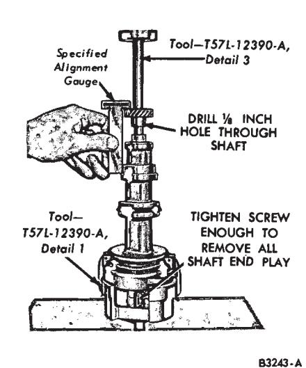
Fig. 23 — New Shaft and Gear Installation — V-8 Engine
- Follow steps 1, 2, 3 and 4 under Installing Original Shaft and Gear-Conventional Ignition System-Eight Cylinder Engine.
- Attach the distributor shaft supporting tool to the distributor and install the assembly in a vise. Insert a 0.024 inch feeler gauge between the backing screw and the shaft. Tighten the backing screw on the tool enough to remove all shaft end play. Remove the feeler gauge and allow the shaft to rest on the backing screw. Slide the collar on the shaft. While holding the collar in place against the distributor base, drill a 1/8-inch hole through the shaft using the access opening in the collar as a pilot.
- Position the gear on the end of the shaft. Install the assembly in a press.
- With the backing screw on the support tool tightened enough to remove all end play, press the gear on the shaft to the specified distance from the bottom face of the gear to the bottom face of the distributor mounting flange (Fig. 23). Drill a 1/8-inch hole through the shaft using the hole in the gear as a pilot.
- Remove the distributor from the press and remove the support tool. Install the collar retaining pin (Fig. 13) and the gear retaining pin (Fig. 8).
- Complete the assembly by following steps 7-thru 23 under Installing Original Shaft and Gear—Six Cylinder Engine.